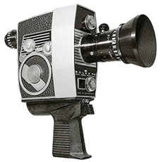
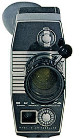

P4 AUTOMATIC
8mm Camera
1965
- OVERALL DIMENSIONS: 8 1/2" x 8" x 2 1/2"
- WEIGHT: Approximately 2 lbs.
- OUTER CASE: Aluminum body with leather covering; black crinkle-finish paint on top and rear.
- FILM CAPACITY: 25ft daylight loading spools of double run 8mm film. When a roll runs through the camera, only half the width of film is exposed. The spool is then reversed and run through again, exposing the other half. When processed, film is split and spliced together giving 50' for projection. Projection time at 16 fps for 25' roll is 4 minutes.
- THREADING: manual, with no loop forming; with the pressure pad opened the film is simply placed over a guide roller, threaded behind the gate, over the bottom guide roller and onto the takeup spool.
- MOTOR: Constant speed, spring motor mechanism; governor controlled. Generous winding key, attached to the camera, folds back against its side when not in use. Spring cannot be over-wound.
- ZOOM LENS: SOM Berthiot Pan Cinor 9-36mm f/1.9 zoom lens
- VIEWFINDER: Reflex viewfinder with coincident image rangefinder; Visible display of diaphragm openings; Adjustable diopter for eyesight correction; Rubber eyecup.
- VARIABLE SPEED: 12, 18 and 40 frames per second.

RELEASE BUTTON: Continuous exposures can be made by a trigger release on the front of the grip handle. Cable release socket allows for single frame exposures or continuous hands-free filming.- VARIABLE SHUTTER: Adjustable dial changes the shutter opening from 0-165 degrees to allow for shortened exposure times and fades.
- FOOTAGE COUNTER: Precise reading of exposed film footage. Resets to zero upon reloading.
- SINGLE FRAME: A cable release socket allows the user to expose single frames for filming animation, titles, etc.
- MANUAL REWIND: A small hand crank allows for rewinding film up to 60 frames.
- AUTOMATIC EXPOSURE: Electric-eye metering with fully automatic diaphragm and manual override. Film sensitivity of 10-400 ASA.
- GRIP: Built-in grip with trigger release and socket for cable release. A storage compartment provides room for the backwind handle. The bottom of the grip contains a 1/4" thread tripod socket.
Notes and Comments
The P4 was the final camera in the "Zoom Reflex Automatic" series. Apart from the Pan Cinor lens, it is nearly identical in appearance to the Bolex S1. The P4, however, was a slightly more expensive camera. The viewfinder system used a coincident image rangefinder allowing for accurate focusing, and displayed the diaphragm opening to the side of the framing area.
Bolex cameras in this series:
K1 Automatic, K2 Automatic, S1 Automatic and P4 Automatic.
Serial Numbers and Dates of Manufacture
The serial number on this model is located on the rear of the camera, beneath the viewfinder. The P4 began production in 1964, but was not introduced until 1965.
| # | Year | ||
|---|---|---|---|
| C 10000 | — | C 11200 | 1964 |
| C 11200 | — | C 38400 | 1965 |
| C 38400 | — | C 41200 | 1966 |